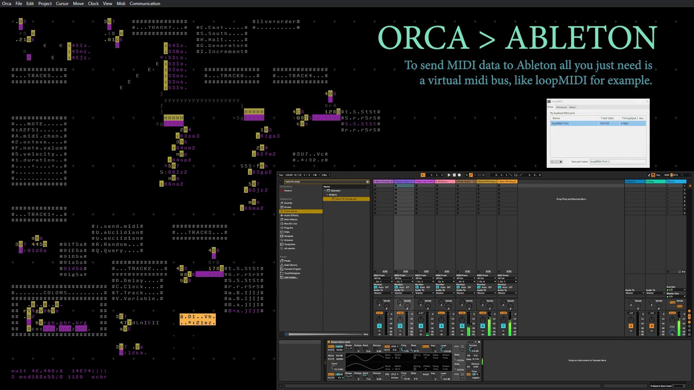
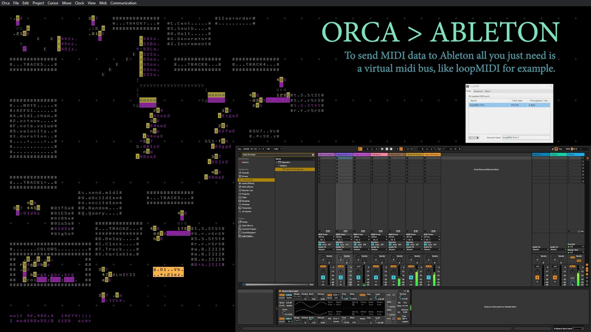
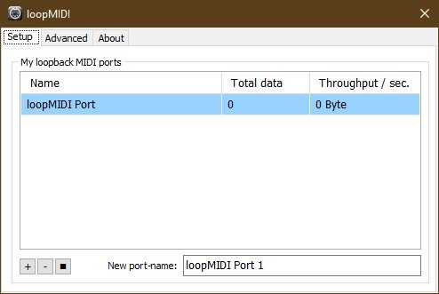
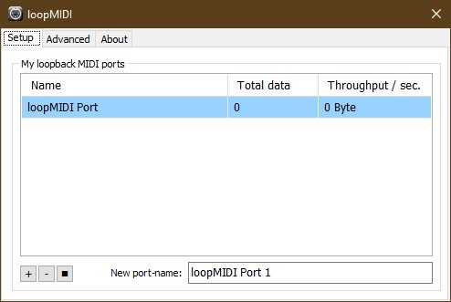

Ce chapitre sera consacré à mes expérimentations antérieures visant à explorer l’interaction entre la musique et les shaders en temps réel. Mon choix s’est orienté vers des outils permettant de générer un flux MIDI afin d’animer mes shaders en fonction des hauteurs des notes. Dans cette optique, j’ai entrepris une étude approfondie de la structure MIDI afin de mieux appréhender et localiser les informations clés telles que la hauteur de la note, sa vélocité et sa durée (une section sera dédiée à cette exploration).
Il existe de nombreux logiciels de livecoding musical parmi lesquels choisir. Dans cette multitude, j’ai sélectionné Orca (voir [orca00]) pour sa syntaxe ésotérique et FoxDot (voir 1.1) pour son intégration avec Python ainsi que pour sa syntaxe intuitive proche de celle d’une partition papier.
J’approfondirai ces deux solutions plus en détail dans la suite de ce mémoire. Il est à noter que parmi les demosceners, chacun a ses propres préférences en matière de logiciel, souvent influencées par des affinités personnelles ou par leur expérience professionnelle ou artistique. Parmi les logiciels les plus appréciés figurent TidalCycles, Sonic Pi, SuperCollider (qui demeure la référence en matière de synthèse sonore) ainsi que Max/MSP (voir [tidal00], 1.2, [sc00] et 1.3).


Au cours de mon intensif de M1, j’ai élaboré le pipeline suivant : d’abord générer le MIDI avec Orca, puis transférer vers Ableton via loopMIDI1, puis intégrer le MIDI dans TouchDesigner à l’aide d’un plugin pour finalement animer les visuels grâce aux nodes de TouchDesigner. J’ai été agréablement surpris de ma facilité à maîtriser Orca, malgré sa réputation de langage difficile à appréhender. Cependant, je restais insatisfait, les étapes du processus manquant de réactivité pour une utilisation en conditions réelles lors de performances sur scène.
C’est pourquoi, lors de mon intensif de M2, j’ai choisi une approche légèrement revisitée en concevant un pipeline à la fois similaire et unique. Cette fois-ci, le MIDI était généré par FoxDot et ensuite acheminé vers TouchDesigner via loopMIDI. Au sein de cette configuration, le MIDI anime des variables uniformes intégrées au code GLSL de TouchDesigner, qui propose un node dédié. Cette démarche m’a offert l’occasion d’approfondir mes compétences avec FoxDot et de constater la facilité avec laquelle on peut traduire un shader dans TouchDesigner. Bien que cette approche m’ait paru plus efficace que la précédente, mon objectif demeure de réduire au maximum l’usage de logiciels tiers pour la création d’animations de shaders, un objectif que j’espère atteindre à la fin de mon mémoire.
Je commencerai par une analyse de mes intensifs de M1 et M2 pour exposer ma méthodologie, ainsi que les avantages et inconvénients rencontrés au cours de ces expérimentations pour ensuite proposer une solution basée sur l’éditeur de shaders KodeLife renommé pour sa capacité à traiter divers types d’entrées, notamment le MIDI sous forme de texture.
Lors de mon intensif en M1, j’ai eu recours à Orca pour la transmission de signaux MIDI (voir 1.4). Orca est un langage de programmation ésotérique2 (parfois également désigné par le terme « exotique »), conçu par Hundred Rabbits3 et particulièrement adapté au livecoding. Le code peut être modifié en temps réel, et en utilisant les signaux MIDI, il est possible de contrôler des éléments visuels ou des dispositifs d’éclairage.
Orca est structuré comme une grille bidimensionnelle dans laquelle chaque cellule peut contenir un caractère. Une cellule vide est symbolisée par le caractère « ».
Les opérateurs d’Orca comprennent toutes les lettres de l’alphabet ainsi que quelques symboles. Chaque opérateur occupe une case unique dans la grille. La majorité des opérateurs ont une ou plusieurs entrées à l’Est et à l’Ouest, et une sortie généralement dirigée vers le Sud4. Bien que certains opérateurs soient mobiles, la plupart demeurent fixes.
Chaque lettre de l’alphabet, qu’il s’agisse des majuscules (\(A-Z\)) ou des minuscules (\(a-z\)), représente un opérateur spécifique. Les opérateurs en majuscules s’exécutent à chaque frame, tandis que les opérateurs en minuscules s’exécutent à chaque bang, symbolisé par le caractère « ».
Par exemple, l’opérateur « » génère un bang régulier au Sud. Tout opérateur adjacent à cette cellule spécifique sera alors activé. Parmi ces opérateurs, on trouve des fonctions d’addition, de soustraction, ainsi que des fonctions pour lire et écrire dans des variables.
Prenons l’exemple de l’opérateur « ». Il dispose de deux entrées (« \(8\) » et « \(2\) ») et d’une sortie (« »). Ainsi, un bang sera généré toutes les 16 frames et activera les opérateurs adjacents.
8D2
.*.D’autres opérateurs ont un nombre différent d’entrées et de sorties. Prenons l’exemple de l’opérateur « » : il dispose de trois entrées (deux à l’Ouest correspondant au décalage horizontal et vertical et une à l’Est correspondant au caractère que l’on souhaite écrire) et d’une sortie au Sud. Cet opérateur permet d’écrire un caractère avec un décalage dans la grille. Dans cet exemple, il écrit un \(7\) décalé d’une cellule vers le Sud et d’une cellule vers l’Est.
11X7
....
...7Pour jouer une note MIDI, on combinera les opérateurs « » (qui génère un bang régulier) et « » (qui envoie un message MIDI). Bien que « » n’ait pas de sortie dans Orca, il envoie un message MIDI à un appareil MIDI.
D8.....
*:A2F51L’opérateur « » attend 5 arguments mais seuls les trois premiers sont obligatoires.
A (argument 1): le channel MIDI sur lequel envoyer le message (A channel 10)
2 (argument 2): l’octave (2 Troisième octave)
F (argument 3): la note (F Fa)
5 (argument 4): la vélocité (la force avec laquelle la touche a été frappée lorsque la note a été jouée)
1 (argument 5): la durée (le temps pendant lequel la note est tenue)
C’est le point de départ pour générer un son, mais en associant divers opérateurs, on peut produire une gamme de possibilités, telles que jouer des notes de façon aléatoire, stocker des mélodies dans des tableaux, créer et exécuter des séquences mélodiques, utiliser des variables, et appliquer la logique booléenne pour établir des conditions, entre autres. Le défi réside dans la quête d’une harmonie musicale tout en concevant un visuel singulier. De manière personnelle, je trouve aussi un intérêt particulier à explorer l’aspect visuel du langage, comme en recréant un Tetris synchronisé avec la musique de Tetris (voir [tetris00]). Le lecteur pourra retrouver la liste de tous les opérateurs en annexe [appendix:orcaops].
Lors de mon intensif, j’ai acheminé les signaux MIDI d’Orca vers Ableton, puis d’Ableton vers TouchDesigner via un réseau nodal pour interpréter les valeurs MIDI et animer les visuels (voir 1.6 et 1.7). Bien que cette méthode soit efficace, elle ne m’a pas semblé suffisamment proche de la pratique du livecoding. C’est lors de mon intensif de M2 que j’ai pu explorer une approche plus directe, en exploitant le node de TouchDesigner spécifiquement conçu pour le fragment shader.
 


Suite à ma déception concernant le manque d’interactivité en temps réel après l’intensif de M1, j’ai décidé, dans le cadre de mon intensif de M2, d’explorer l’utilisation de FoxDot pour la création de flux MIDI. L’objectif initial de cette démarche était de concevoir une performance de livecoding qui mettrait en évidence l’interaction entre le son produit via le code de FoxDot et les fragment shaders (voir 1.8).


Dans cette section, je vais présenter ma démarche et évoquer les difficultés que j’ai rencontrées durant ce projet. Mais avant cela j’aimerais approfondir l’étude de FoxDot comme j’ai pu le faire avec Orca.
FoxDot est un environnement de programmation Python qui fonctionne en tandem avec SuperCollider, un langage de programmation dédié à la synthèse audio en temps réel et au traitement du signal. Bien que je n’aborde pas en détail les capacités de SuperCollider dans ce mémoire, il est important de souligner sa puissance et sa capacité à créer des sons électroniques et des effets sonores complexes à partir de zéro grâce à la synthèse sonore. Néanmoins, l’interaction avec SuperCollider peut être simplifiée grâce à FoxDot. On utilise SuperCollider en arrière-plan pour configurer les instruments, puis on redirige le flux audio vers des DAWs5 (Digital Audio Workstation) comme Reaper ou Ableton pour écouter les instruments.

Ce qui m’a particulièrement attiré vers FoxDot, malgré sa documentation souvent incomplète et dispersée sur le web, c’est sa similitude avec l’écriture d’une partition musicale et sa syntaxe objet propre au langage Python. Fort de mes connaissances en solfège acquises par ma pratique du piano et du bandonéon, j’y vois une analogie avec la représentation d’une partition traditionnelle. Une mélodie est symbolisée par des listes, qui peuvent elles-mêmes être considérées comme des objets. Ainsi, on peut accéder à de nombreux attributs tels que la hauteur de la note, sa durée, le sustain, et bien d’autres.
Pour mieux comprendre la logique propre à FoxDot nous allons analyser pas à pas une ligne de code « classique ».
p1 >> bass([0,1,2,3,4,5], dur=PDur(3,8), amp=[1,1/2,1/2]).every(6,"stutter",4,dur=3,oct=6)Dans cet exemple, nous associons un objet à la variable à l’aide de l’opérateur . Le terme qui suit immédiatement, , désigne l’instrument qui sera utilisé dans SuperCollider. Nous définissons ensuite les arguments du . Le premier argument, qui attend une liste, spécifie les notes à jouer. Ainsi, correspond aux notes Do, Ré, Mi, Fa, Sol et La dans le contexte de la gamme de Do majeur.
Les attributs suivants, et , déterminent respectivement la durée des notes et l’amplitude du son. La partie finale avec la méthode applique la méthode tous les 6 temps, avec une durée de 3 et une octave de 6 pour chaque note.
Une caractéristique unique de FoxDot est la présence de variables qui évoluent dans le temps. Lors de la programmation musicale en direct, il est souvent souhaitable que les éléments évoluent progressivement. Cela peut être illustré par l’utilisation de séquences d’accords. Par exemple, pour représenter la séquence d’accords Do-Fa-Do-Sol, on pourrait utiliser la liste Python et souhaiter jouer chaque accord pendant 8 temps. Pour cela, on peut utiliser des variables qui varient dans le temps, de manière à changer d’accord après 8 temps. Ces variables sont désignées sous le nom de « variables dépendantes du temps » ou en code.
Pour résoudre notre problème initial de lecture d’une séquence d’accords, nous pourrions utiliser le code suivant, en ajustant la durée selon nos besoins, pour voir la séquence jouer sur 8 temps pour chaque accord :
p1 >> pluck(var([0, 3, 0, 4], 8), dur=[1,1/4,1/4,1/2]) + (0, 2, 4)La syntaxe de FoxDot offre une grande flexibilité et précision dans la création de motifs musicaux, tout en restant accessible pour ceux qui sont familiarisés avec la musique et la programmation.
Un autre avantage considérable pour ceux qui maîtrisent la programmation est la possibilité de créer ses propres fonctions. Écrire des fonctions personnalisées dans FoxDot permet d’élargir significativement les capacités du langage, permettant ainsi de concevoir des motifs musicaux plus complexes et adaptés à des besoins spécifiques.
La fonction suivante s’ajoute aux méthodes disponibles pour les objets grâce à un décorateur. Le décorateur est utilisé pour créer des méthodes pouvant être appelées par tous les objets . Cela offre la possibilité d’intégrer de nouvelles fonctionnalités ou de modifier le comportement des objets sans nécessiter de modifications du code source de FoxDot lui-même. Cette fonction a pour objectif de gérer le fade in6 et le fade out7 afin de contrôler l’apparition et la disparition des instruments.
À l’intérieur du corps de la fonction, il est possible d’incorporer tout code FoxDot valide pour générer ou manipuler le son. Cela peut englober la création de , la définition de séquences de notes, l’application d’effets sonores, entre autres.
@player_method
def fade(self, dur=8, fvol=1, ivol=None, autostop=True):
if ivol == None:
ivol = float(self.amplify)
self.amplify = linvar([ivol, fvol], [dur, inf], start=self.metro.mod(4))
def static_final_value():
if fvol == 0 and autostop:
self.stop()
else:
self.amplify = fvol
self.metro.schedule(static_final_value, self.metro.next_bar()+dur+1)
return selfDepuis FoxDot, un Player dédié permet l’envoi de messages MIDI vers SuperCollider via la commande . Ce signal MIDI peut ensuite être dirigé vers loopMIDI, un utilitaire de routage MIDI, à l’aide de la commande dans SuperCollider (voir [intensifs03] et 1.11).
 

Dans TouchDesigner, le flux MIDI est récupéré via le gestionnaire de périphériques grâce au node « midiIn ». Étant donné que le signal reçu est normalisé, il est alors possible de redéfinir les intervalles aisément en utilisant le node « Math » pour animer n’importe quelle variable dans TouchDesigner, notamment les variables uniformes des nodes GLSL (voir [intensifs19] et 1.12).

L’une de mes préoccupations principales était la conversion du code GLSL vers la syntaxe attendue par les nodes de TouchDesigner. Comme mentionné plus tôt dans le mémoire, cette transition entre les langages shaders peut présenter certaines subtilités.
Initialement, je craignais que cette étape de traduction ne rencontre des obstacles imprévus. Toutefois, cette appréhension s’est avérée largement infondée, du moins en grande partie. Le processus de conversion requiert quelques ajustements, dont la plupart peuvent être automatisés : il s’agit notamment des ajustements relatifs aux types , ou encore les qu’on écrit avec ou sans « », la transmission de la résolution en tant que variable uniforme, ainsi que la syntaxe appropriée lors de l’utilisation de textures.
Avec Loïck (mon partenaire de projet avec Jihed), nous avions même envisagé de développer un outil spécifique intégré à TouchDesigner pour automatiser l’intégration de shaders provenant de Shadertoy. Cependant, après nos expérimentations, nous avons abandonné cette idée. En effet, chaque shader importé peut comporter des caractéristiques spécifiques qui rendent difficile leur généralisation au sein d’un unique programme, ce qui aurait été trop ambitieux.
Les véritables difficultés rencontrées étaient principalement liés aux bugs de rendu, en particulier l’adaptation du code pour utiliser le bon espace sur lequel dessiner, notamment la transformation des uv. La traduction vers TouchDesigner s’est donc avérée plus aisée que prévu, nous avons donc saisi cette opportunité pour préparer le terrain pour Jihed. Nous avons isolé et configuré des variables pouvant influencer le shader. Pour chaque variable identifiée, nous avons défini une plage de valeurs pour faciliter les animations futures.


FoxDot aurait été idéal pour mes besoins si il ne présentait pas une limitation significative concernant la gestion du signal MIDI. Actuellement, il n’est pas possible de jouer un son tout en transmettant simultanément le signal MIDI. Pour pallier cette contrainte durant mon intensif, j’ai créé l’illusion d’une diffusion musicale en temps réel via le livecoding, alors qu’en réalité, un dédié gérait en parallèle l’émission régulière de signaux MIDI qui correspondaient au rythme de la musique.
Heureusement, bien que la version officielle de FoxDot ne soit plus mise à jour par son créateur originel, une version 2.0 (Renardo) est en cours de développement par Élie Gavoty, un membre du Cookie Collective. J’ai pu discuter directement de ce problème avec lui, et il l’a placé parmi ses priorités.
J’ai omis de mentionner un autre obstacle technique auquel j’ai été confronté lors de cet intensif. Comme précédemment expliqué, mon objectif était de récupérer un signal MIDI plutôt qu’un signal analogique, afin de m’éloigner des interactions traditionnellement associées à l’interaction image-son. Au lieu d’une analyse fréquentielle (aigus, basses, tempo, etc.), je souhaitais naïvement récupérer la hauteur de la note dans TouchDesigner, en anticipant l’existence d’un node approprié à cet effet.
Cependant, ce que TouchDesigner reçoit est bien la hauteur de la note, mais sous forme de nom de variable contenant la valeur de l’amplitude de la note jouée (voir 1.14). Par conséquent, pour récupérer la véritable hauteur de la note, il aurait été nécessaire de développer un node personnalisé en Python capable d’analyser la chaîne de caractères du nom de la variable et d’extraire le suffixe numérique indiquant la hauteur de la note. N’ayant identifié ce problème que tardivement, je n’ai pas eu l’opportunité de développer ce node spécifique (peut-être lors d’une future tentative).
Ainsi, le signal MIDI récupéré dans TouchDesigner est en quelque sorte incomplet : bien que le rythme musical soit respecté, la hauteur des notes n’a aucune véritable influence sur l’interaction.

Pour ce mémoire, j’ai opté pour l’exploration d’un autre pipeline de traitement. Initialement, mon intention était de réaliser cette expérimentation avec OpenGL8, en utilisant du code graphique bas niveau pour bénéficier d’un contrôle maximal. Cette approche représente le choix le plus complexe en termes de pré-requis techniques, mais elle offre également le plus de possibilités et de contrôle. Il est tout à fait envisageable de générer du MIDI en C++, puis d’assurer le passage des informations du CPU vers le GPU via des variables uniformes, et enfin d’utiliser ces informations pour animer des vertex shaders, des geometry shaders ou bien sûr des fragment shaders en GLSL.
Au cours de ce semestre, j’ai eu l’opportunité de suivre les enseignements de Farès Belhadj sur la programmation graphique en tant qu’auditeur libre. J’ai saisi cette occasion pour perfectionner mes compétences en programmation OpenGL avec pour but de participer au concours de fin d’année visant à produire un exécutable de musique et un shader d’une taille inférieure à 64 Ko.
Mon projet initial consistait à élaborer une fonction en C++ capable d’interpréter et de décomposer un flux MIDI côté CPU, puis de transmettre les attributs de chaque note au fragment shader via des variables uniformes. Toutefois, mon niveau actuel en C++ et en OpenGL n’est pas suffisamment avancé pour concevoir cette fonction à partir de zéro. J’ai donc préféré ne pas m’y aventurer, d’autant plus que la rédaction du mémoire représente déjà une tâche exigeante en termes de temps et d’efforts. J’ai néanmoins examiné des solutions permettant de composer du MIDI directement en code (voir annexe [appendix:codemidi]).
J’ai donc opté pour KodeLife, un IDE dédié au livecoding qui présente une interface très intuitive où les modifications du code sont immédiatement visualisées à l’écran. Contrairement à Shadertoy nous avons accès au vertex shader ainsi qu’au geometry shader. Un autre avantage considérable est la diversité des entrées disponibles : non seulement on peut importer des textures, mais aussi utiliser des paramètres tels que le temps, l’image précédente du programme, et surtout, dans notre cas particulier, l’audio. Cela peut se faire à partir d’un fichier audio simple ou d’un flux MIDI.


Au début, j’ai été déconcerté en voyant que KodeLife représentait un fichier MIDI sous la forme d’une image en niveaux de gris. Cependant, grâce aux conseils de z0rg, j’ai finalement pu comprendre la situation.
La principale difficulté réside dans la conceptualisation du fait qu’un son puisse être représenté par une texture. Cette idée peut sembler peu intuitive au départ, mais elle est en réalité très logique. En effet, la musique est généralement représentée par une structure MIDI, qui est essentiellement une organisation de données. Cependant, rien n’empêche de représenter ces données sous forme d’une image, où chaque pixel correspond à un échantillon du fichier MIDI.
En utilisant le langage de shader GLSL, il est ensuite possible d’extraire les informations désirées à partir des pixels de la texture, de la même manière que l’on accéderait à n’importe quelle autre texture. Par exemple, un pixel aux coordonnées \((x, y)\) pourrait contenir les informations NoteOn/NoteOff de la note LA à l’octave 1.
Sur la documentation officielle de KodeLife, on trouve des indications sur l’offset à respecter pour obtenir les informations souhaitées. Par exemple, pour récupérer la vélocité9 (velocity en anglais) d’une note à partir du signal , on peut utiliser le bout de code suivant : .
Malheureusement, les recommandations fournies par la documentation sont inexactes, tout comme l’exemple accessible directement dans KodeLife. Pour résoudre ce problème, j’ai dû littéralement « compter » les rangées et les colonnes de pixels à partir de flux MIDI très minimalistes afin de trouver les bonnes valeurs. Cette tâche s’est avérée très fastidieuse et m’a conduit à entreprendre une étude approfondie de la structure d’un fichier MIDI afin de ne plus travailler à l’aveugle.
Le MIDI, ou Musical Instrument Digital Interface, est un protocole destiné à la transmission et au stockage d’informations relatives à la performance musicale. Ce format existe depuis près de quarante ans (la norme est mise au point en 1982), et sa longévité est due à son efficacité à utiliser les données numériques pour transmettre des informations musicales.
Dans le domaine musical, la précision du timing est primordiale, ce qui nécessite des communications rapides et efficaces. Pour comprendre l’efficacité du MIDI, il est essentiel de revenir sur quelques concepts de base tels que les bits, les octets et le système binaire. Un bit est une unité binaire ayant deux états : soit \(0\), soit \(1\). Les ordinateurs comptent en binaire, ce qui diffère du système décimal que nous utilisons habituellement. Par exemple, en binaire, trois chiffres peuvent représenter jusqu’à huit valeurs différentes (\(2^3\)), tandis qu’en décimal, trois chiffres peuvent représenter jusqu’à mille valeurs (\(10^3\)).
Dans le système binaire, le nombre de valeurs qu’un octet (un groupe de huit bits) peut représenter est \(2^8\), soit \(256\). Le MIDI utilise principalement des messages composés de deux ou trois octets. Ces octets sont classés en deux catégories : les octets de statut et les octets de données. Les octets de statut indiquent la nature de l’action à effectuer (par exemple, le signal ), tandis que les octets de données fournissent les valeurs correspondantes (dans mon cas je recherche la vélocité).
En MIDI, le premier bit d’un octet de statut est toujours un \(1\), et le premier bit d’un octet de données est toujours un \(0\). Ainsi, un octet de données ne dispose que de sept bits pour coder l’information, soit \(2^7\) (128 valeurs différentes). Ce nombre, de \(0\) à \(127\), peut couvrir la gamme des hauteurs MIDI, des vélocités MIDI, des informations de contrôleur, ainsi que les instruments du General MIDI (numérotés de \(1\) à \(128\)).
La limitation à \(128\) valeurs peut sembler restreinte, mais pour la plupart des applications musicales, cette gamme est suffisante. En effet, cela permet de stocker une grande quantité d’informations dans un espace réduit, ce qui est particulièrement efficace pour le stockage et la transmission de données.
La désignation du canal MIDI occupe une partie de l’octet de statut, permettant de configurer les appareils MIDI pour qu’ils répondent uniquement aux messages transmis sur des canaux spécifiques. Par exemple, un synthétiseur peut être configuré pour écouter les canaux 7, 8 et 9, en ignorant les autres. Cela offre une flexibilité dans la gestion des flux d’informations MIDI entre différents appareils. Définir le canal MIDI dans l’octet de statut permet de cibler les informations à recevoir par un instrument MIDI spécifique. Par exemple, chaque instrument peut être assigné à un canal MIDI différent, permettant une gestion précise des messages envoyés à chaque instrument.
Un octet de statut est composé de huit bits. Le premier bit à \(0\) indique que l’octet représente un octet de statut. Les trois bits suivants désignent le type de message, tandis que les quatre derniers bits représentent le canal MIDI. Avec quatre bits pour le canal, il existe seize canaux MIDI différents. Concernant le type de message, trois bits permettent huit types de messages MIDI. Nous analysons en annexe [appendix:midi] les sept premiers types de messages MIDI, laissant de côté le huitième qui est spécifique au fabricant et à l’horloge MIDI.

Pour résumer, les messages MIDI représentent le langage standard utilisé par de nombreux appareils pour communiquer entre eux. Ils se caractérisent par une structure bien définie, où les informations sont stockées sous forme d’octets de statut et d’octets de données. Un message MIDI est donc formé d’un octet de statut, qui indique le type de message et le canal de transmission, suivi d’un ou deux octets de données fournissant des détails sur les valeurs du message. Cette structure assure la cohérence et l’interprétation correcte des informations transmises.
Il est important de souligner qu’aujourd’hui, le MIDI n’est pas l’unique moyen de transmission de données musicales. Toutefois, il demeure largement utilisé. De nouvelles technologies telles que l’OSC10 (Open Sound Control) et le MIDI à haute résolution émergent, offrant ainsi des opportunités innovantes pour la communication et un contrôle musical plus raffiné. Cependant, cela n’indique pas une obsolescence imminente du protocole MIDI original.
Ainsi, en approfondissant ma compréhension de la structure d’un fichier MIDI, j’ai pu accéder aux données souhaitées dans KodeLife. Il a simplement fallu attribuer chaque note d’un clavier MIDI en piochant dans la texture MIDI, puis normaliser ces valeurs pour animer toute variable définie dans le code GLSL.
loopMIDI est un logiciel qui permet de créer des ports MIDI virtuels sur un ordinateur Windows. Ces ports MIDI virtuels peuvent être utilisés pour router des données MIDI entre différentes applications.↩︎
Un langage ésotérique est un langage de programmation conçu de manière intentionnellement compliquée, obscure ou non conventionnelle. Ces langages ne sont généralement pas créés dans le but d’être utilisés pour des applications pratiques ou professionnelles, mais plutôt pour explorer des concepts informatiques, artistiques ou philosophiques, ou pour le plaisir de la programmation.↩︎
Hundred Rabbits est un studio indépendant créatif composé de Rekka Bellum et de Devine Lu Linvega, un duo de développeurs, artistes et explorateurs vivant sur un voilier nommé Pino. Ils sont connus pour leur approche minimaliste et expérimentale de la création, produisant des jeux vidéo, des outils, des expériences et des œuvres artistiques dans divers domaines tels que la programmation, la musique, la vidéo et l’écriture.↩︎
Dans le contexte d’Orca je préfère utiliser la terminologie Est, Sud, Ouest et Nord plutôt que droite, bas, gauche, haut (right, bottom, left, top en anglais)↩︎
Une DAW est une station de travail audionumérique. C’est un système logiciel utilisé pour l’enregistrement, l’édition, le mixage et la production audio.↩︎
Le fade in consiste en une augmentation progressive du volume audio depuis le silence (ou un volume très bas) jusqu’au volume souhaité. Cela crée une transition douce, permettant au son de s’introduire de manière progressive dans l’environnement sonore.↩︎
Le fade out représente une diminution progressive du volume audio, aboutissant finalement à un silence complet (ou à un volume très bas). Cette technique est souvent utilisée pour conclure une piste audio ou pour introduire un changement de scène de manière fluide.↩︎
OpenGL (Open Graphics Library) est une spécification standardisée pour le développement d’applications graphiques interactives en 2D et 3D. Elle offre une interface de programmation qui permet aux développeurs de créer des applications graphiques de haute performance et de haute qualité sur différentes plateformes matérielles. OpenGL est largement utilisé dans les domaines tels que les jeux vidéo, la modélisation et l’animation 3D, la visualisation scientifique et médicale, la conception assistée par ordinateur (CAO) et bien d’autres.↩︎
Dans le protocole MIDI, la vélocité fait référence à la force avec laquelle une touche est pressée sur un clavier ou un autre contrôleur MIDI.↩︎
L’OSC (Open Sound Control) est un protocole de communication pour les réseaux multimédias développé pour transmettre des données de contrôle entre les logiciels et les appareils audiovisuels. Contrairement au MIDI, qui est principalement basé sur le format série de 8 bits, l’OSC utilise des paquets de données basés sur des messages.↩︎